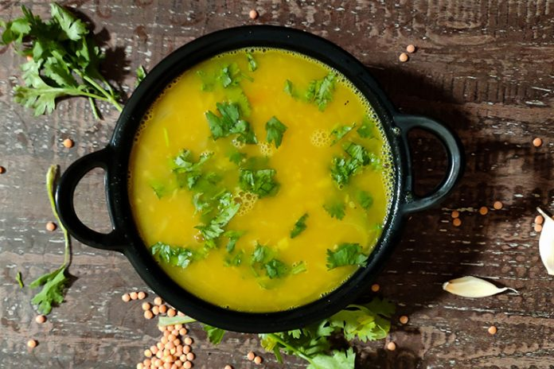

Dal

Description
Ingredients
- 1 cup red lentils
- 1 teaspoon salt
- 1 teaspoon ground turmeric
- 2 chopped red chiles
- 2 tablespoon chopped coriander leaves
Steps
- Combine the lentils, turmeric, chiles and salt in a pot, add 2 cups of water and bring to a boil
- Lower the heat to medium high
- Cook for 10-15 minutes
- Serve with coriander leaves